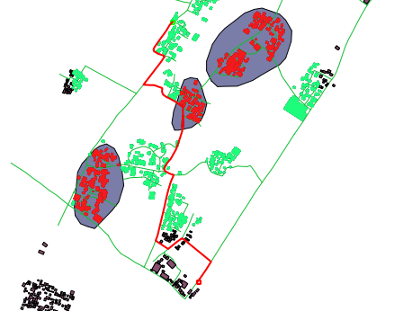

Module 4: Planning an Evacuation Route Based on Hazard Information¶
Learning Objectives
Understand the concept of shortest path and fastest route
Use the Road Graph plugin
Set up speed and road direction
Determine start and destination points
Conduct route analysis and selection
By now you should have a pretty good understanding of how InaSAFE works and its operations.
You know how to add layers, and how to define keywords so that InaSAFE can recognise layers appropriately. Now that we can use InaSAFE effectively to run scenario analyses, we will look at other QGIS functionality that will help us in preparing contingency plans.
In this module, we will learn how to perform a GIS analysis in order to determine an appropriate evacuation route in the event of a disaster.
The term fastest route indicates the route a person can take between point A and point B that will allow them to cover the distance in the least amount of time.
Similarly, shortest path indicates the route that will allow a person to get from point A to point B with the least distance travelled. In theory, this would be a straight line between point A and point B, but in reality this is impractical, because travelling in a straight line means climbing hills and going around buildings and fences. Of course this is why we use roads, and why we calculate fastest and shortest routes using roads.
We will use the Road Graph plugin in this module, which does just that. If we provide two points, the plugin is able to calculate either the fastest route or the shortest path between them.
1. Road Graph plugin¶
We will be continuing with the previous example, which you should have saved. We won’t be using the InaSAFE plugin in this module, so you may close the panel if you like.
Open the project in QGIS.
We will use a pre-prepared roads layer in this module, which may be slightly more detailed than OpenStreetMap. Remove the planet_osm_roads layer and add Jalan_Sirahan, which is located in the
qgis/Sirahan/directory. You should have the following layers:
We will be using a plugin that comes installed with QGIS. Right-click on the toolbars to see which toolbars are activated, and select Shortest path.
A new plugin window will appear in your project window that looks like this:
2. Editing plugin settings¶
We must edit some settings in order for the Shortest path plugin to work. Go to .
Make sure that hour and kilometer are selected as the units.
Set Topology tolerance to 4.
On the Transportation layer tab, select Jalan_Sirahan as the layer. This layer contains the streets that the plugin will use to calculate routes. The rest will remain the same. It should look like this:
On the Default settings tab, we must fill in the direction and speed. Choose two-way direction and 25 for the speed (meaning 25 km/hr). This assumes that traffic can go in both directions at a maximum speed of 25 km/hr.
Click OK.
3. Choosing start and destination points¶
The Road Graph plugin calculates either the shortest or fastest route between two points, so we need to provide a start point and an end point for an evacuation route.
Of course an evacuation route should be for all people in an area, but we can experiment with different start points and see if evacuation routes will be different in different areas.
On the Road Graph panel, click on the plus button next to Start and then click somewhere on the map to indicate the first point of your evacuation route. This would be the initial point for the evacuation route in the time of a disaster.
Your starting point will be marked as a green point and the coordinates of the point will be recorded in the Start input box.
Now we need to assign the destination of our evacuation route. Where will people be evacuated to? Because this is an example, we don’t have a great idea of where an appropriate place would be. We might use GIS to determine appropriate locations, which would most likely be high ground in the event of a flood. For this example, we will choose a destination at the south-east corner of the village.
Click the plus sign next to Stop and click somewhere on the map. The destination will be marked with a red point.
Choose Length or Time next to Criterion. This determines whether Road Graph will look for the shortest distance or the shortest amount of time.
Click Calculate.
The time and distance required for the evacuation route will be displayed.
In this example, the length of the fastest route between our two points is about 1.97 kilometres and the travel time is 0.0788 hours, which is about 5 minutes. The time in our example is determined by the distance and our default speed of 25 km/hr. The speed can be changed, and can even be set to different amounts for each segment of road.
The route appears on our map:
To save the evacuation route as a separate layer, go to , and click OK.
You may need to choose a CRS for the new layer. UTM zone 49S should work fine.
The layer will be added to your Layers panel as shortest_path, but you still need to save the layer.
To save, right-click on the layer and click Save as…
Summary¶
In this module we’ve learned how to calculate the shortest distance between two points using the Road Graph plugin. Using this you can easily determine evacuation routes from various areas. Evacuation routes are important for contingency plans, and those living in threatened areas can be educated with the quickest and safest routes to take in the event of an emergency.